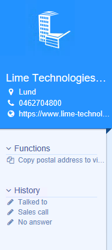

Getting started
A Lime Bootstrap Actionpad
An Actionpad built with Lime Bootstrap has the following structure:

<lbs-hero params="header: company.name, img: company">
<lbs-list-item params="text: company.visitingcity, icon: 'fa-map-marker'" data-bind="openMap: company.fullvisitingaddress"></li>
<lbs-list-item params="text: company.phone, call: company.phone, icon: 'fa-phone'" data-bind="call: company.phone"></li>
<lbs-list-item params="text: company.www, openURL: company.www, icon: 'fa-globe'" data-bind="openURL: company.www"></li>
</lbs-hero>
<lbs-menu params="title: 'Functions', expanded: true">
<lbs-list-item params="text: 'Copy postal address', icon: 'fa-calendar'" data-bind="click: runMyFunction"></li>
</lbs-menu>
<lbs-menu params="title: 'History', expanded: true">
...
</lbs-menu>
An ActionPad built with Lime Bootstrap has two main components; a View and a ViewModel. Lime Bootstrap uses knockoutjs Model-View-ViewModel (MVVM) pattern.
The view
The view is a piece of HTML which descripes where elements should be placed. In the view we bind the data and functions of the ViewModel to the view. Each ActionPad has an unique view, which is a partial html-file with the same name as the LimeType it is used with, for example `company.html``
In the viewwe make heavy use of components
The ViewModel
The ViewModel is a Javascript object containing your data and functions to interact with the View. You don't have any direct access to the ViewModel when building ActionPads. For direct access to a ViewModel you need to create a Custom Components. You have some indirect access to the ViewModel of an ActionPad through specifing which data sources should be used in the file _config.js.
Configuration
All framework configuration is done in the file _config.js. Here you can load additional data, enabling the debug mode or load custom components.
lbs.externalConfig = {
/*
Enable or disable the debug-logging
*/
debug: true,
/*
Verbose levels:
debug : Shows all log levels
info : Shows information level and up
warn : Shows warning level and up
error : Shows only error level logs
*/
verboseLevel: 'warn',
/*
Load custom components
*/
components: [
{ name: 'my-component', path: 'components/my-comp/my-comp.js' }
]
/*
Datasources to be used for each view
*/
config:{
helpdesk : {
dataSources: [
{ type: 'activeLimeObject', embed: ['person'] },
{ type: 'translation' },
{ type: 'relatedLimeObjects', limetype: 'person', alias: 'person' },
]
}
}
}
Components
Components are self contained specialized html elements, for example <lbs-hero>. We are using knockout components behind the scenes to create the components, but in essens it is very inspired of the emerging webstandard of web components. Several components are included but you have also the ability to build your own components or download community components from Lime Store.
See all our components here.
Custom Components and Apps
Lime Bootstraps allows you to create and custom components, as a compliment to the included components. Lime Bootstrap 1 had the concept of creating small apps. These apps still run fine in Lime Bootstrap 2.0, but it is prefered to use components.
Components and Apps can be found here.
A Custom Component is added in _config.js and can then be used in the same way as any included component.
To start an app add this HTML to your view:
<div data-app="{app:'[Name of app]',
config:{
[App config]
}}">
</div>
Each app has it's own instructions how to start and install them. Some apps require VBA and/or stored procedures to be added.
Translation
All available translations from the Localization table are automatically available in the actionpad context. The same language as the logged in user uses is automatically used. The translations are cached in a dictionary to increase speed, but requires you to run ThisApplication.Setup to rebuild the dictionary if you add translations or make changes.
<li data-bind="text:localize.ActionPad_Todo.addTodo"></li>
The example below uses the versatile knockout binding attr to add a tooltip with localization support. It also uses the custom Lime Bootstrap bindings vba and icon.
<li data-bind="vba:'Actionpad_Person.newComment', text:localize.Actionpad_Person.t_newcomment, icon:'fa-comment', attr: { title: localize.Actionpad_Person.tooltip_newcomment }"></li>
Technical notes
The translations are added to the global view model and are thus available in your apps.
Note that it is not possible to use localization in the standard way, e.g., localize.Actionpad_Person.t_newcomment within a block where you are using the knockout binding with.
Fetching data from fields in Lime CRM
All fields from the ActiveInspector are automagically available for you to use in your view. The syntax is [Record class name].[field database name].[property].
The available properties are (in order of relevance): * .text * .value * .key - available for set and list fields_ * .class__ - available for relation fields
<!-- Company Actionpad showing the name of the company-->
<li data-bind="text:company.name.text"></li>
<!-- Shorthand--><li>{{company.name.text}}</li>
<!-- Person Actionpad using the id of the company relation as a parameter to a VBA-function. Note the Javascript syntax in the Knockout bindning -->
<li data-bind="vba:'SomeFunction,' + person.company.value"></li>
<!-- Business Actionpad showing the optionKey from a set-list -->
<li data-bind="text:business.businesstatus.key"></li>
Loading additional data
It is common to use data from more than the ActiveInspector and the following syntax will NOT work <li data-bind="text:person.company.phone.text"></li>
Instead you can load additional data by requesting data sources in _config.js.
The loaded data can then be access by:
All avialable data sources can be found here.
<!-- Loading person and company info on a helpdesk actionpad-->
<li data-bind="text:helpdesk.company.text"></li>
<li data-bind="text:person.phone.text"></li>
<li data-bind="text:person.mobilephone.text"></li>
<li data-bind="text:company.phone.text"></li>
Keyboard shortcuts
The different view can be opened with shortcuts provided the actionpad is in focus.
| Function | Command |
|---|---|
| Reload actionpad | ctrl + shift + r |